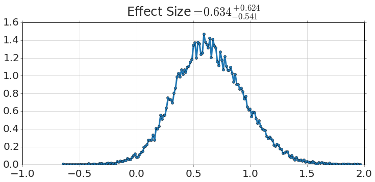

There's a very nice paper, Bayesian estimation supersedes the t test. John K. Kruschke, Journal of Experimental Psychology: General, 2013, v.142(2), pp.573-603. The methods described provide at once posterior probabilities not just for the means of two groups, but their standard deviations, their normality, and effect size. The supporting website has a lot of useful resources, including a number of implementations. The original implementation is in R, but there is a Python implementation using PyMC.
I decided to implement the same thing using the emcee package. The full implementation is viewable here. My implementation is pretty general, and can handle some arbitrary tests of the variables, like:
1 2 3 | model.P('(mu1>101) & (mu1<102.1)')
0.85502222222222224
|
and
1 2 3 | model.P('sigma1<sigma2')
0.0060111111111111112
|
and
1 | model.plot_distribution('Effect Size=(mu1-mu2)/sqrt((sigma1**2+sigma2**2)/2)')
|

Hopefully the code will be useful to someone, perhaps just me as I explore similar problems.